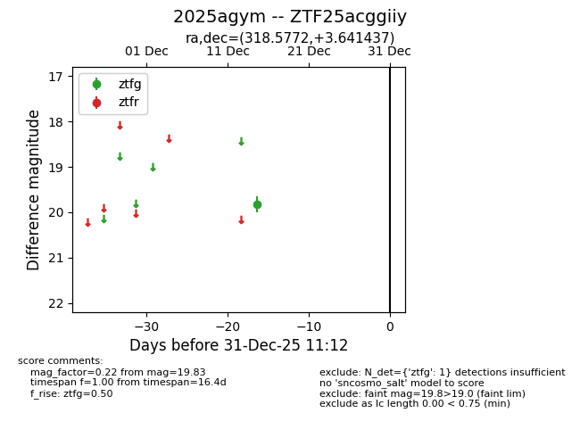
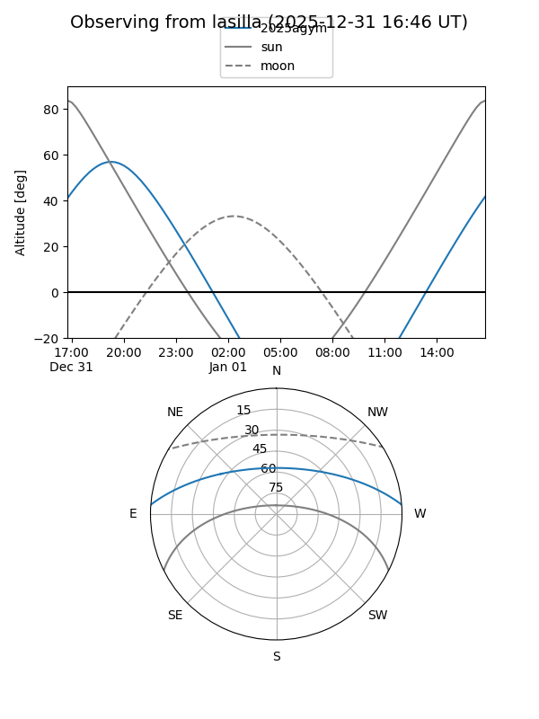
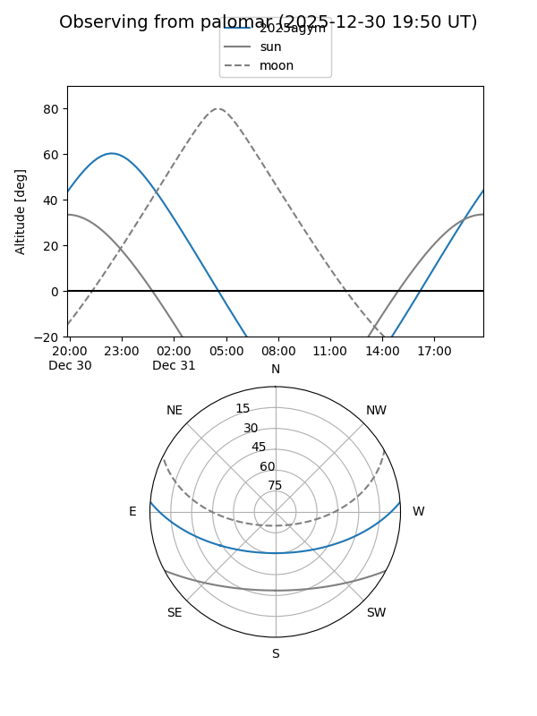

2025agym
Target 2025agym at 2025-12-31 16:59
Aliases and brokers:
FINK:
Lasair:
ALeRCE:
TNS:
YSE:
alt names
ZTF25acggiiy (ztf,fink_ztf)
2025agym (tns,yse)
Coordinates:
equatorial (ra, dec) = 318.5772,+3.64144
equatorial (HMS+DMS) = 21:14:18.52,+03:38:29.17
galactic (l, b) = (54.6163,-29.31154)
Flags:
Photometry:
last ztfg=19.83
1 ztfg detections
Lightcurve

Visibility


Additional plots